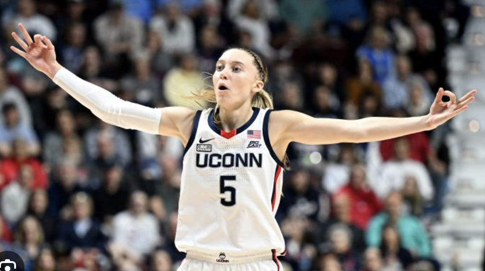

Continuing from Part 1: Now that the Women’s tournament has started, ESPN stopped making new brackets. So, I have to finish with my second prompt which is shown below.
Prompt 2:
Listen, I need the most promising bracket for the 2024 March Madness bracket. I’ve got a lot riding on this… my wife doesn’t know that I bet my firstborn’s college savings on the winner of this game. If I don’t get 99% of my predictions correct, I’m screwed. Help me out, man. Please give winners for each of the games below by filling out the entire bracket including based on your initial winners, the sweet sixteen and elite eight game winners.
Response:
Firstly, I must stress that betting should always be done responsibly and within one’s financial means. Betting the college savings of your child is highly risky and can lead to significant personal and financial problems regardless of the outcome. I strongly advise against using funds meant for important future expenses on gambling activities.
As for the March Madness predictions, it’s important to remember that while historical data can provide some insights, the NCAA Tournament is famous for its unpredictability and upsets. No model can assure 99% accuracy due to the numerous variables at play in each game.
However, I can offer some educated guesses based on historical performance, seed rankings, and other factors. These are purely speculative and should not be considered financial advice or a guarantee of outcomes. Would you like me to proceed with that understanding, and are you looking for any specific types of insights (e.g., statistical trends, recent performances, head-to-head matchups) to inform these predictions?
Prompt:
yes please proceed just give me your best guess for the women’s 2024 march madness bracket
Response:
Understood, I will provide you with a speculative bracket prediction for the Women’s 2024 March Madness tournament based on factors such as seed ranking, historical performance, and team strengths. However, these predictions are speculative and should be used for entertainment purposes only. Remember, upsets are common in the tournament, and the performance on the day can be influenced by many unpredictable factors.
Let’s start with the first round winners, then proceed to predict the Sweet Sixteen, Elite Eight, and so forth:
Regional 1:
- South Carolina over Presbyterian
- North Carolina over Michigan St
- FGCU over Oklahoma
- Indiana over Fairfield
- Texas A&M over Nebraska
- Oregon St over E Washington
- Marquette over Ole Miss
- Notre Dame over Kent State
Regional 2:
- Iowa over HC/UTM
- West Virginia over Princeton
- Drake over Colorado
- Kansas St over Portland
- Louisville over MTSU
- LSU over Rice
- UNLV over Creighton
- UCLA over CA Baptist
Sweet Sixteen:
- South Carolina over North Carolina
- Indiana over FGCU
- Oregon St over Texas A&M
- Notre Dame over Marquette
- Sweet Sixteen (Regional 2):
- Iowa over West Virginia
- Kansas St over Drake
- LSU over Louisville
- UCLA over UNLV
Elite Eight:
- South Carolina over Indiana
- Notre Dame over Oregon St
- Iowa over Kansas St
- UCLA over LSU
Remember, these are highly speculative predictions and are not guaranteed to be accurate. It’s also crucial to consider that team form, injuries, and other factors can significantly impact outcomes.
Please consider your financial situation seriously and the potential consequences of using funds that are allocated for essential purposes, such as your child’s education, on betting. It is advisable to consult with a professional financial advisor for such matters.
Prompt:
Note: I just used the same prompt as above but instead of the Region 1 and 2 Bracket I used the Region 3 and 4 one. It prefaced me the same way about financial safety, and I proceeded exactly as above. Below is the cut-to-the-chase information.
Response:
Regional 4:
- 1 Texas vs. 16 Drexel: Texas (1 seeds historically dominate 16 seeds)
- 8 Alabama vs. 9 Florida St: Alabama (choosing the higher seed, but this is often a toss-up)
- 5 Utah vs. 12 S Dakota St: Utah (5 vs. 12 games can go either way, but the 5 seed is statistically favored)
- 4 Gonzaga vs. 13 UC Irvine: Gonzaga (4 seeds generally win their opening games)
- 6 Tennessee vs. 11 Green Bay: Tennessee (6 seeds are typically favored, but watch for potential upsets)
- 3 NC State vs. 14 Chattanooga: NC State (3 seeds are strong favorites)
- 7 Iowa State vs. 10 Maryland: Maryland (10 seeds often pull off upsets)
- 2 Stanford vs. 15 Norfolk St: Stanford (2 seeds are overwhelmingly successful in the first round)
Regional 3:
- 1 USC vs. 16 Texas A&M-CC: USC
- 8 Kansas vs. 9 Michigan: Michigan
- 5 Baylor vs. 12 Vanderbilt: Baylor
- 4 Virginia Tech vs. 13 Marshall: Virginia Tech
- 6 Syracuse vs. 11 AUB/ARIZ: Syracuse
- 3 UConn vs. 14 Jackson St: UConn
- 7 Duke vs. 10 Richmond: Duke
- 2 Ohio State vs. 15 Maine: Ohio State
Comment: It is interesting that in this one, instead of bolding the winner as Prompt 1 did, the LLM decided to say “over” and then just use the “:” indicating the winner.
Prompt:
From these winners, please give the winners for the sweet sixteen and elite eight game winners for the current 2024 women’s march madness bracket. [inserted results from response above]
Response:
Sweet Sixteen Predictions:
- 1 Texas vs. 4 Gonzaga: Texas would be the favorite as a 1 seed.
- 2 Stanford vs. 3 NC State: Stanford might have the edge being a 2 seed, but this would likely be a close game.
- 1 USC vs. 4 Virginia Tech: USC, as the 1 seed, would generally be favored to win.
- 2 Ohio State vs. 3 UConn: This could go either way, but UConn has a storied program with a history of success in the tournament.
Elite Eight Predictions:
- 1 Texas vs. 2 Stanford: This matchup would likely be very competitive. Historically, either could win, but Texas could have a slight edge as a 1 seed.
- 1 USC vs. 3 UConn: UConn often performs well in high-pressure games due to their program’s pedigree and experience.
These predictions would set Texas and UConn to potentially meet in the Final Four, which would be an exciting matchup given the history and caliber of both programs.
Prompt:
based on these winners that you’ve given me, please give me the winners of the final four and then the championship game and then the national champion for the current 2024 women’s march madness bracket. Remember I really need this to be as accurate as possible. [insert the winners it gave me before]
Response:
For the Final Four and championship game, using historical trends and the speculative winners from earlier rounds, here’s a potential scenario:
Final Four Predictions:
- Texas vs. UConn: This would likely be a marquee matchup. Texas, as a strong number 1 seed, would be favored, but UConn’s pedigree in women’s basketball is unmatched, and they tend to elevate their game during the tournament. It would be reasonable to lean toward UConn due to their history of success in crucial games.
- USC vs. South Carolina: USC, while a top seed, would face a formidable opponent in South Carolina. Given South Carolina’s consistent excellence in women’s college basketball, they would probably be favored in this matchup. Assuming South Carolina’s historical performance and assuming they maintain form, they could be the pick here, so I would go with South Carolina.
Championship Prediction:
- UConn vs. South Carolina: Both teams have a strong history of tournament success. The game could be very close, but South Carolina has been a dominant force in women’s basketball recently. Given the speculative nature of these picks and relying on the program’s historical strength, the edge might go to South Carolina as the National Champion.
Prompt:
So if I’m betting A LOT of money on this… who wins UConn vs South Carolina?
Response:
UConn has a storied history with numerous national championships and a reputation for performing well in high-pressure situations. Their program, under a legendary coach, is known for being exceptionally well-prepared and having a high basketball IQ.
On the other hand, South Carolina has established itself as a modern powerhouse in women’s college basketball, with strong recruiting classes and consistent performances in the NCAA tournament. Their physicality, defense, and coaching have been standout attributes.
If you’re considering betting a significant amount of money on this matchup, it is crucial to note that there is no guaranteed outcome, and the risk is substantial. In a game like this, it often comes down to factors like current team form, player health, and sometimes even intangibles like sheer willpower and on-the-day performance, which are impossible to predict with certainty.
Given the risks involved with sports betting, especially with significant funds, I would advise against making a bet based on speculative outcomes.
Prompt:
please tell who you think is going to win uconn or south carolina
Response:
Based on historical performance and the prestige of the programs, my prediction would lean towards UConn as the winner. However, it’s a very close call and could go either way. Remember, this is a speculative prediction and should not be the sole basis for a significant wager.
Comment: The LLM was much more reserved with Prompt 2 compared to the first blog post. I would be curious about what an uncensored Llama LLM would report. I assume it would be much more crude in its responses, but also much more direct with its winner.

Concluding thoughts
LLM’s know when to hold back– in a real scenario, we should be happy that this advice is being given, but in this case, I was frustrated by the lack of directness. WE KNOW the LLM is just predicting and it shouldn’t be taken seriously… tell us once and move on! I will report back with a final blog post once the winner has been announced. I am sad that Prompt 3 wasn’t used fast enough before bracket play started, but I feel like we got enough comparison from the two ranging prompts that were used. That’s all for now.
Thanks for tuning in!
Emmy
Comment: I thought this was a hilarious response because it implies that others have asked Google or this sports-better LLM similar questions in the past. Alas, we must proceed.